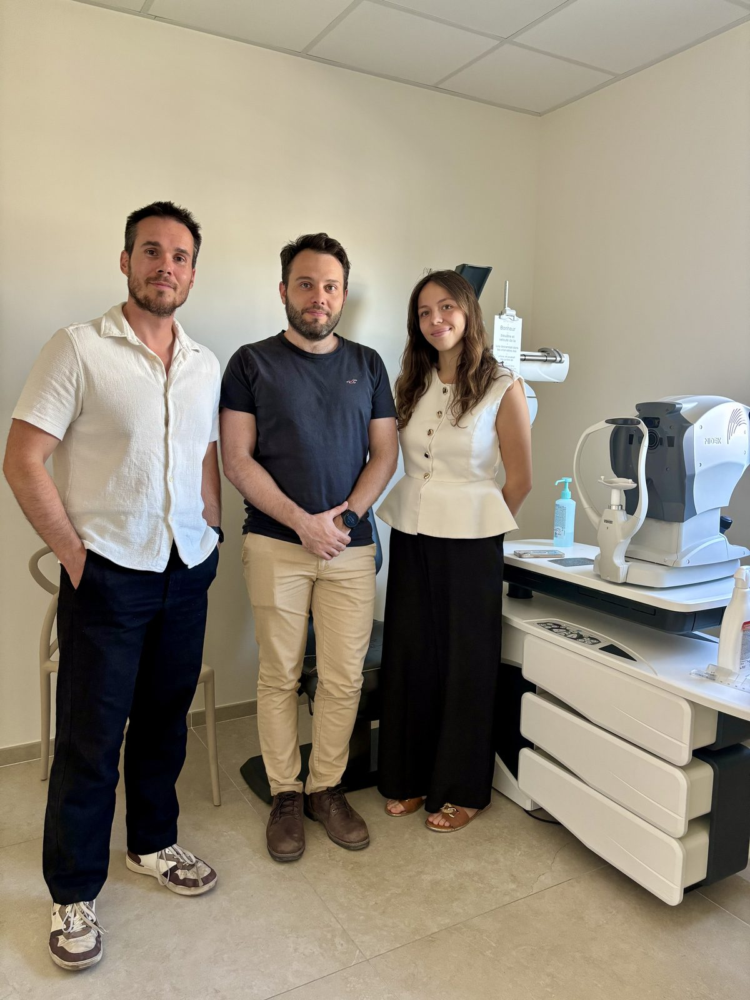

Le rôle de l'orthoptiste
L'orthoptiste est le professionnel de santé de l'équilibre et de l'efficacité du regard : il évalue et rééduque la vision binoculaire, en étroite collaboration avec les médecins ophtalmologues du centre.
Au sein d'Ophta Méditerranée, les orthoptistes interviennent en amont et en complément des consultations médicales : leurs bilans préparent et enrichissent l'examen de l'ophtalmologue, réalisé sur place.
Les bilans orthoptiques
- Évaluation de l'acuité visuelle et de la réfraction
- Étude de la vision binoculaire et de l'équilibre des muscles oculomoteurs
- Bilan avant rééducation (fatigue visuelle, troubles de la convergence)
- Examens complémentaires prescrits par le médecin (champ visuel, OCT, rétinographie)

La rééducation visuelle
La rééducation orthoptique s'adresse notamment aux troubles de la convergence et à la fatigue visuelle (travail sur écran, maux de tête, vision double intermittente, difficultés de lecture). Elle se déroule en séances régulières, avec des exercices adaptés à chaque situation.
Le dépistage chez l'enfant
L'orthoptiste joue un rôle clé dans le dépistage des troubles visuels de l'enfant : strabisme, amblyopie, retard d'acquisition visuelle. Plus le dépistage est précoce, plus la prise en charge est efficace. Voir la page la vision de l'enfant.